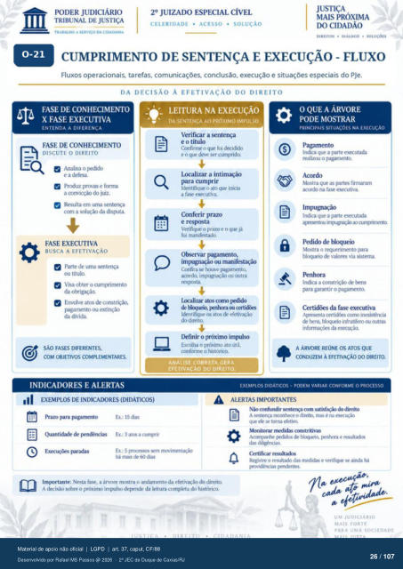

Transcrição automática em português, ainda não revisada. Confira grafia, prazos e termos jurídicos na imagem e no PDF antes de utilizar.
TRABALHO A SERVIÇO DA CIDADANIA
CELERIDADE • ACESSO • SOLUÇÃO
DIREITOS • DIALOGO • SOLUCOES
0-21
CUMPRIMENTO DE SENTENÇA E EXECUÇÃO - FLUXO
Fluxos operacionais, tarefas, comunicações. conclusão, execução e situações especiais do PJe.
DA DECISÃO À EFETIVAÇÃO DO DIREITO
FASE DE CONHECIMENTO
X FASE EXECUTIVA
ENTENDA A DIFERENCA
FASE DE CONHECIMENTO
DISCUTE O DIREITO
Analisa o V*dido a
e a defesa a
Pr«luz provas e forma a convicção do juiz.
a Resulta em uma sentença
com a solução da disputa.
FASE EXECUTIVA
BUSCA A EFETIVAÇÃO
a Parte de uma
ou titulo. a
Visa obter o cumprimento da
a Envolve atos de constrição,
pagamento ou extinçào da divida
sÀo FASES DIFERENTES,
COM cnJETIVOS COMPLEMENTARES.
INDICADORES E ALERTAS
EXEMPLOS DE INDICAM)RES (DIDÁTICOS)
_ LEITURA NA EXECUÇÃO
DA SENTENÇA AO PRÓXIMO IMPULSO
Verificar a sentença e o título
Confirrne o que foi d«idido e o que deve wr cumprid(X
a intimação para cumprir
Identifiqtr o ato que inicia a fase executiva.
Conferir prazo e respsta
Verifique o prazo e o que já foi manifestado.
pagamento, impugnação ou manifestação
Confira se houve pagarnento. acordo. impugnação ou outra
lxx•alizar atos como Fdido grnlxra
atos efetivaçáo do direito
Ikfinir o próximo impulM) Escolha o próximo ato útil.
conforme o histórico.
ANALISE CORRETA GERA
EFETIVAÇÃO DO DIREITO.
O QUE A ÁRVORE
PODE MOSTRAR
PRINCIPAIS SITUAÇÕES NA EXECUÇÃO
Indica que a parte realizou o pagamento.
Mostra que as partes firmaram na executiva.
Inda que a parte ex«utada alxe*ntcx• irnrx•guçü) cu-tvrinx•rta
'Mostra o r«luerimento para blcxlueio de valores via sistema.
Indica a constriçào de t*ns pra garantir 0 pagamento.
Certi&s da fase executiva CORK' inexistência
tx•ns, Infrutifero ou outras
A ÁRVORE REÚNE OS ATOS QUE
CONDUZEM À EFETIVAÇÃO DO DIREITO.
Prazo pra pagarnento Quantid" de Fndéncias
paradas Ex.: 15 dias
Ex.: 3 atos a cumprir Ex.: 5 prtxesws
há mais dias
EXEMPLOS DIDÁTICOS - PODEM VARIAR CONFORME O PROCESSO
A
ALERTAS IMPORTANTES
Não confundir «•nterwa com do direito A sentença recMhece 0 direito, mas e na
que ele se torna efetivo Accxnpanhe blCAueicx e
das dili*ncias. Registre 0 resultack) das medidas e verifique
providérwias Fndentes Imrxn•tante•. Nesta fase. a árvore mostra 0 andamento da efetivação do direito.
A decisão sobre o próximo impulso derrnde da leitura completa do histórico.
UM JUDICIÁRIO
MAIS FORTE.
PARA UMA SOCIEDADE
Ver também o infográfico original (página 26)
